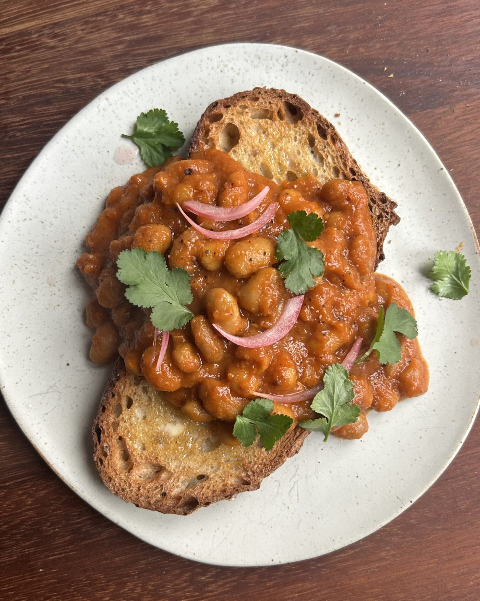

Masala Baked Beans with Pickled Red Onion + Fresh Coriander
Jarred masala baked beans warmed through and piled onto toast with quick pickled red onion and coriander.

Before you start the pickled red onion needs at least 30 minutes pickling, or use shop-bought.
Ingredients
For the quick pickled red onion
Method
- Put the 1 red onion, 120ml apple cider vinegar, 120ml water and 1 tsp honey or agave into a jar with a pinch of salt.
- Secure the lid and shake.
- Leave to pickle for at least 30 minutes.
- Heat the 390g jar of masala baked beans in a pan over a medium heat for 2-3 minutes.
- Toast the 2 slices of sourdough until crisp and golden — either in a toaster for a lighter finish, or in a pan with a drizzle of olive oil, frying both sides.
- Spoon the beans onto the toast.
- Top with the 2 tbsp pickled red onions and the handful of coriander leaves, and serve immediately.
Notes
Built around a ready-made jar of spiced beans (tomato and mango based) rather than plain beans, so it is really an assembly job. Any jar of spiced or curried baked beans will do the same work.
The pickled onions keep in the fridge for up to two weeks.
A dollop of yoghurt on top is good too.
Use agave rather than honey to make it vegan.